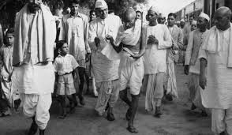

Freedom Fighter
Mahatma Gandhi, born Mohandas Karamchand Gandhi on October 2, 1869, in Porbandar, India, was a preeminent leader of the Indian independence movement against British rule. Renowned for his philosophy of nonviolence (ahimsa) and civil disobedience, Gandhi's approach was rooted in principles of truth and passive resistance. His leadership played a pivotal role in India achieving independence in 1947. Gandhi's influence extended beyond India's borders, inspiring civil rights movements worldwide. His legacy as a champion of peace, tolerance, and social justice continues to resonate globally. Gandhi was assassinated on January 30, 1948, but his ideals and teachings remain influential.
- Champaran Satyagraha (1917): Gandhi's first significant involvement in Indian politics was the Champaran Satyagraha, where he led a protest against the oppressive plantation system in Bihar. This movement resulted in better conditions for the farmers who were forced to grow indigo under harsh conditions by British landlords.
- Kheda Satyagraha (1918): In the Kheda district of Gujarat, Gandhi organized a nonviolent protest against unfair tax policies. The movement demanded tax relief for farmers affected by floods and famine. The British government eventually conceded, granting tax suspensions.
- Non-Cooperation Movement (1920-1922): Following the Jallianwala Bagh massacre in 1919, Gandhi launched the Non-Cooperation Movement, urging Indians to withdraw from British institutions, schools, courts, and services. The movement aimed to induce the British government to grant self-governance to India. It was a significant step in mobilizing Indian society against colonial rule, though it was suspended after the violent Chauri Chaura incident.
- Salt March (Dandi March) and Civil Disobedience Movement (1930-1934): One of Gandhi's most iconic campaigns, the Salt March, was a 240-mile trek to the Arabian Sea to make salt in defiance of British laws. This act of nonviolent protest sparked widespread participation and was a critical moment in the Civil Disobedience Movement, which included boycotts of British goods and refusal to pay taxes.
- Quit India Movement (1942): During World War II, Gandhi launched the Quit India Movement, calling for an end to British rule. The movement was marked by widespread protests, strikes, and civil disobedience. Despite severe repression by the British authorities, it intensified the demand for independence and mobilized a broad spectrum of Indian society.
- These movements, characterized by Gandhi's principles of nonviolence and civil disobedience, significantly undermined British authority and galvanized Indian national consciousness, ultimately leading to India's independence in 1947.

Champaran Satyagraha

Non-Cooperation Movement

Salt March